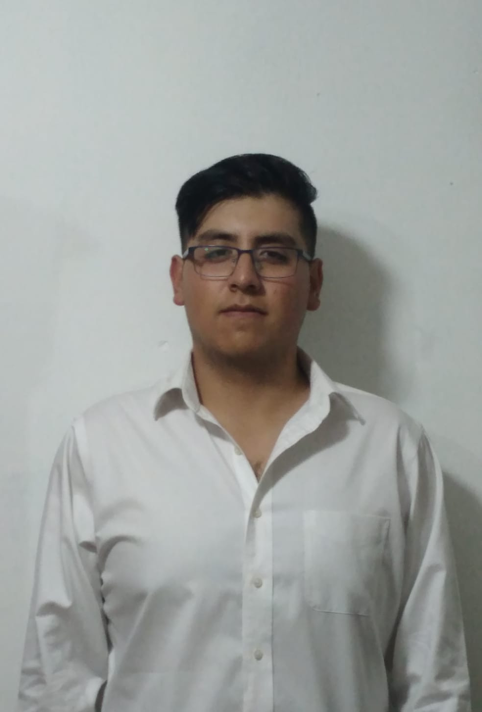

Bienvenido a mi presentacion
Me llamo Erick Gaston Cordero Rico, soy estudiante de la Universidad Politecnica de Tulancingo, estoy cursando la carrera de Ingenieria en Sistemas Computacionales. Llevo en la universidad actualmente 2 años, cursando la materia anfitriona Programacion Web, poniendo los conocimientos vistos en esta misma clase se dara a la vista esta pagina inicial donde arriba se podra observar los cursos que he tenido a lo largo de mi estancia. Mediante las materias cursadas son los conocimientos que cuento
